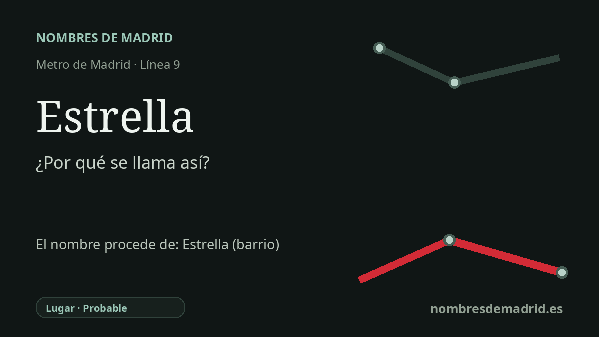

Publicado el · Investigación de Nombres de Madrid · Cómo verificamos cada origen · 8 fuentes consultadas
Respuesta rápida
La estación de Estrella toma su nombre del barrio de la Estrella, en Retiro. El origen mejor apoyado del topónimo es la antigua vinculación de los terrenos con Seguros La Estrella, reflejada después en calles con nombres de estrellas, constelaciones y figuras celestes.
La historia del nombre
La estación de Estrella toma su nombre del barrio de la Estrella, en Retiro, junto a la propia estación. La parada está en la línea 9, en el borde oriental del distrito, junto a la Calle 30/M-30 y el eje del Camino de los Vinateros, con el acceso del lado de Retiro vinculado a la calle de la Estrella Polar y a la calle de Sirio.
El nombre que hay detrás de la estación es, por tanto, un topónimo de barrio, no principalmente el de una calle. La explicación mejor apoyada en las fuentes accesibles indica que los solares de la zona pertenecieron o fueron promovidos inicialmente por Seguros La Estrella. Ese nombre empresarial pasó a identificar el barrio y quedó reforzado por un callejero lleno de referencias al cielo.
Este matiz es importante porque la explicación actual basada en una supuesta calle Estrella no encaja con el callejero oficial madrileño de esta zona. El callejero oficial registra en Retiro la calle de la Estrella Polar, mientras que la calle de la Estrella es otra vía distinta del distrito Centro. En el propio barrio de la Estrella, los nombres cercanos forman un conjunto claramente celeste: Sirio, Cruz del Sur, Lira, Perseo, Piscis, Pez Volador, Pez Austral y plaza de los Astros.
La estación se inauguró el 31 de enero de 1980, cuando el primer tramo de la línea 9 llevó el Metro desde Sainz de Baranda hasta Pavones. La prensa de la época presentó el nuevo servicio como una línea para Moratalaz y La Estrella, con cinco estaciones iniciales: Sainz de Baranda, La Estrella, Vinateros, Artilleros y Pavones. El nombre de la estación refleja, por tanto, una identidad barrial ya consolidada cuando llegó el metro.
La confianza es alta para la relación directa entre la estación y el barrio, y también para el contexto de apertura de 1980. El origen último en Seguros La Estrella queda como probable, no plenamente verificado, porque las fuentes accesibles lo repiten de forma coherente, pero no se ha consultado un registro de la propiedad, expediente urbanístico o la historia impresa completa del distrito que pruebe directamente la cadena de propiedad.